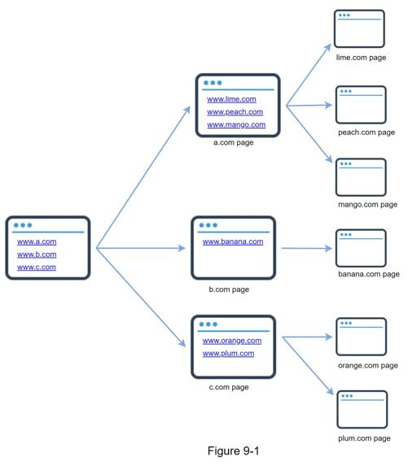

In this chapter, we focus on web crawler design: an interesting and classic system design interview question.
A web crawler is known as a robot or spider. It is widely used by search engines to discover new or updated content on the web. Content can be a web page, an image, a video, a PDF file, etc. A web crawler starts by collecting a few web pages and then follows links on those pages to collect new content. Figure 9-1 shows a visual example of the crawl process.

A crawler is used for many purposes:
•Search engine indexing: This is the most common use case. A crawler collects web pages to create a local index for search engines. For example, Googlebot is the web crawler behind the Google search engine.
•Web archiving: This is the process of collecting information from the web to preserve data for future uses. For instance, many national libraries run crawlers to archive web sites. Notable examples are the US Library of Congress [1] and the EU web archive [2].
•Web mining: The explosive growth of the web presents an unprecedented opportunity for data mining. Web mining helps to discover useful knowledge from the internet. For example, top financial firms use crawlers to download shareholder meetings and annual reports to learn key company initiatives.
•Web monitoring. The crawlers help to monitor copyright and trademark infringements over the Internet. For example, Digimarc [3] utilizes crawlers to discover pirated works and reports.
The complexity of developing a web crawler depends on the scale we intend to support. It could be either a small school project, which takes only a few hours to complete or a gigantic project that requires continuous improvement from a dedicated engineering team. Thus, we will explore the scale and features to support below.